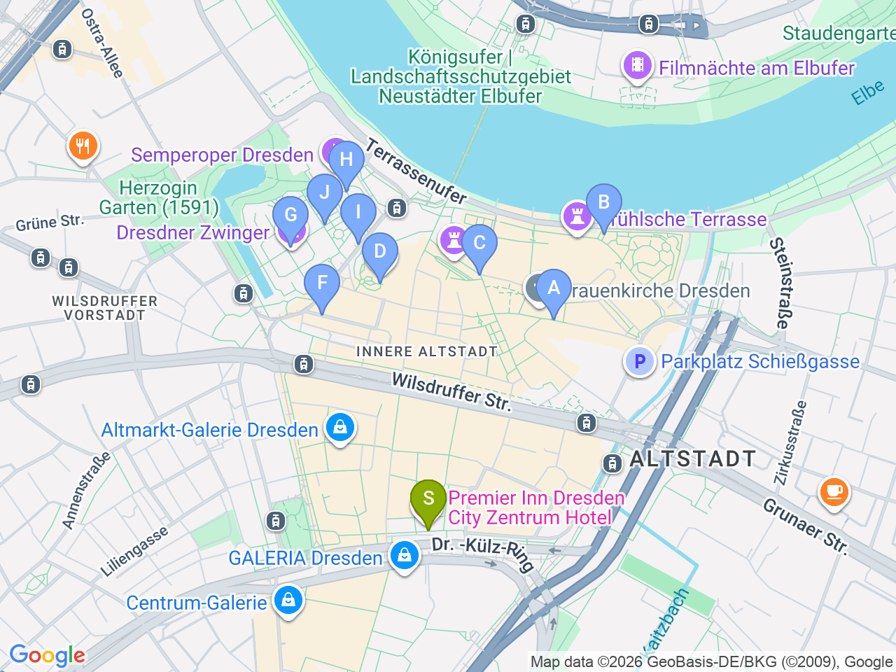

Day 23 · 2026-09-07（一）
德國・柏林/萊比錫/德勒斯登 Day 7/7
德勒斯登老城精華：王宮・茨溫格宮・聖母教堂
一次走完 Fürstenzug 瓷磚壁畫、王宮多個展區、Zwinger 與易北河畔的歐洲陽台
⏰不需要再搶 Grünes Gewölbe（歷史綠穹）時段票——改買 Residenzschloss「Ticket Royal Palace」（€18/人，優惠€13.5），現場或線上購票、免預約時段，涵蓋兵器博物館與國家廳房(含Riesensaal巨人廳、土耳其廳)、錢幣館、版畫素描館；注意這張票不含新綠穹珍寶館(Neues Grünes Gewölbe)也不含 Hausmannsturm 塔樓登頂，這兩項都要另外加購票券，這趟不特別排；王宮週二休館，9/7是週一，正常開放10:00-17:00

彈性探索景點DAY 23
| 地點 | 地點 (英文) | 預計停留(分鐘) | 價格 | 備註 |
|---|---|---|---|---|
| Frauenkirche 登頂 | AFrauenkirche, Dresden | 約45分鐘 | 約 €8-10 | 建議一早前往，避開排隊；圓頂票現場entrance G購買、不開放預約，教堂做禮拜時段暫停開放，出發前查官網當天時間 |
| Neumarkt 廣場 | BFrauenkirche, Dresden | 約20分鐘 | 免費 | 教堂周邊重建後的巴洛克式街廓 |
| Brühlsche Terrasse | CBrühlsche Terrasse, Dresden | 約30分鐘 | 免費 | 易北河畔「歐洲陽台」，適合傍晚再訪看夕陽 |
| Fürstenzug（王侯馬列瓷磚壁畫） | DFürstenzug, Dresden | 約15分鐘 | 免費 | 全世界最大瓷磚壁畫，長102公尺，免費參觀不需預約 |
| Residenzschloss（Ticket Royal Palace） | FResidenzschloss, Dresden | 約60-90分鐘 | €18（優惠€13.5） | 當日主要付費行程，含兵器博物館與國家廳房(含Riesensaal巨人廳、土耳其廳)、錢幣館、版畫素描館，免預約時段；不含新綠穹珍寶館與Hausmannsturm塔樓登頂，這兩項需另外加購，這趟不特別排 |
| 午餐：Sophienkeller im Taschenbergpalais | GSophienkeller im Taschenbergpalais, Dresden | 約60分鐘 | 見上方三餐資訊 | 王宮旁 |
| Zwinger 茨溫格宮 | HZwinger, Dresden | 約45分鐘 | 庭院免費參觀 | 巴洛克建築群，庭院噴泉與立面雕飾就很值得逛 |
| Semperoper 外觀 | ISemperoper, Dresden | 約20分鐘 | 外觀免費 | Theaterplatz 地標建築 |
| 咖啡：Café Schinkelwache | JCafé Schinkelwache, Theaterplatz, Dresden | 約45分鐘 | 約 €8-15／人 | Semperoper 正對面的老衛兵室改建咖啡館，坐著看歌劇院與王宮外觀就是最好的參觀方式 |
| 晚餐：Alte Meister | KAlte Meister, Dresden | 約90分鐘 | 見上方三餐資訊 | 緊鄰 Zwinger 與 Semperoper |
每日三餐
午餐
Sophienkeller im TaschenbergpalaisSophienkeller im Taschenbergpalais約 €15-25／人
📍 Taschenberg 3, Dresden中世紀主題餐廳，就在王宮旁，氣氛很有特色
晚餐
住宿資訊
Premier Inn Dresden City Zentrum
📍 Premier Inn Dresden City Zentrum, Dr.-Külz-Ring 15A, Dresden